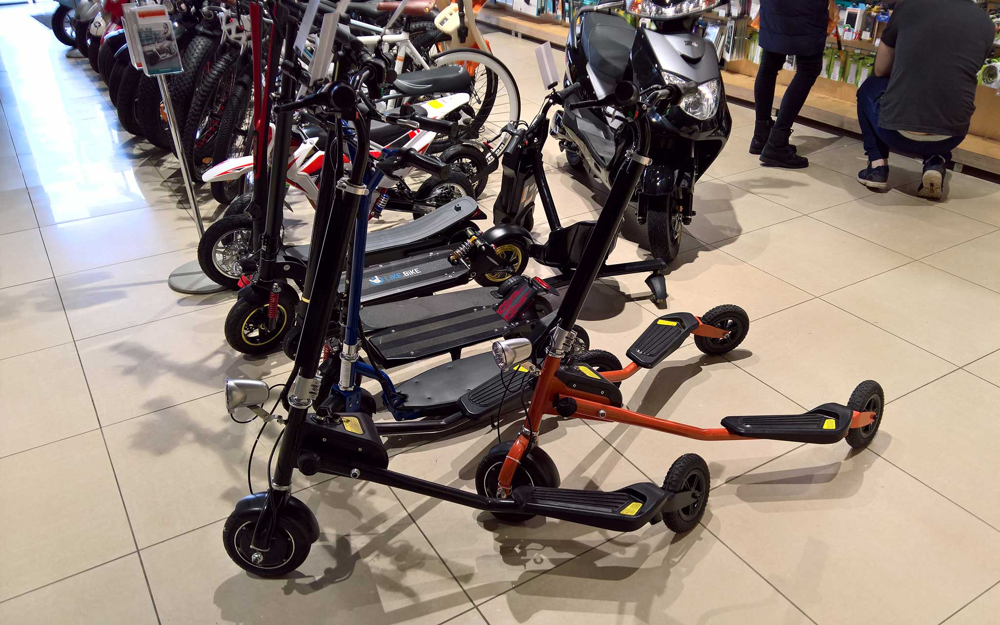

Спасибо!
Вопросы «как жить дальше»? :)
Ihor Zenich
Презентация: bit.ly/bs-4-right
#ChernivtsiJS, June 10, 2017
Ihor Zenich, EPAM
Bootstrap 4, day 1,065.
— Mark Otto (@mdo) June 7, 2017
656 files changed, 66,882 insertions, 82,436 deletions.
(I swear it's getting close to being done!) https://t.co/8mXRvcZiu0
For the first time in I have no idea how long, @getbootstrap is below 300 open issues and 100 open PRs on GitHub. Progress! pic.twitter.com/Dpi5S8JMoJ
— Mark Otto (@mdo) October 28, 2016
Bootstrap 4, day 1,065.
— Mark Otto (@mdo) June 7, 2017
656 files changed, 66,882 insertions, 82,436 deletions.
(I swear it's getting close to being done!) https://t.co/8mXRvcZiu0
…и зачем мне это знать.
На новый проект сразу берите 4-ку
npm install bootstrap@4.0.0-alpha.6В 4-ке он уже есть, а для 3-ки есть отдельный репозиторий:
npm install bootstrap-sass/* Project variables */
@import "project/variables";
/* Bootstrap */
@import "bootstrap/bootstrap-variables";
@import "../../node_modules/bootstrap-sass/... /_bootstrap";
@import "bootstrap/bootstrap-customization";
/* Project CSS */
@import "project/...scss";// Layout
$site-padding-horizontal: 40px;
$mainNavbar-height: 52px;
$mainLogo-height: 44px;
$footerBar-height: 40px;
// Colors
$project-header-bg: #3f484c;// Bootstrap Variables file
// Derived Bootstrap variables can depend on values from here
@import 'variables.scss'; // Import project styles variables
// Customize Bootstrap variables
that get imported before the original Bootstrap variables.
// Layout
$navbar-height: $mainNavbar-height;
$navbar-inverse-bg: $project-header-bg;// Bootstrap Customization file
// This gets loaded after bootstrap/variables is loaded
@import 'variables.scss'; // Import project styles variables
// Rewrite default bootstrap components
h1 {
&:first-child {
margin-top: 65px;
}
}
А дальше идет ваш обычный css, тут могут быть веселые баги с webpack, но это тема для отдельного доклада :)
Будет дропнут вместе с IE10 в Bootstrap 5.
Вопросы «как жить дальше»? :)
Ihor Zenich
Презентация: bit.ly/bs-4-right